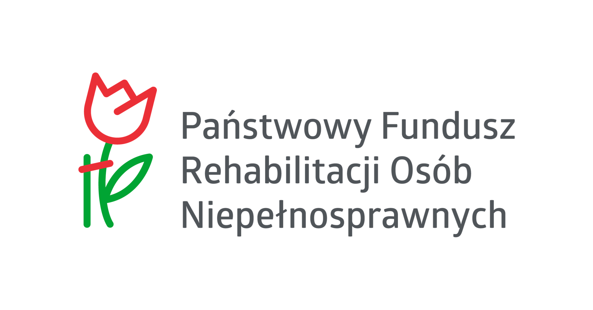

czasopisma wysyłane są automatycznie pocztą elektroniczną lub na CD w plikach tekstowych. Czasopisma można czytać jedynie przy pomocy udźwiękowionego komputera lub telefonu.

Kiosk audio
czasopisma zapisywane w plikach cyfrowych i audio mp3 na CD i przesyłane pocztą tradycyjną. Czasopism można czytać przy pomocy odtwarzaczy CD.
Instrukcja i dokumenty do pobrania:
e-Kiosk L
czasopisma dostępne na stronie można czytać przy pomocy komputera, specjalistycznego oprogramowania, telefonu komórkowego, dostępu do sieci Internet. www.ekiosk.defacto.org.pl.
Instrukcja i dokumenty do pobrania.